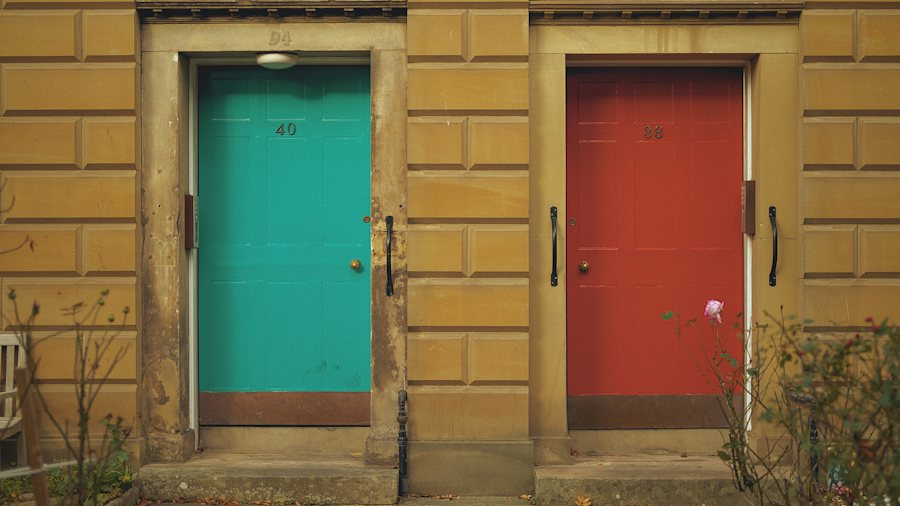
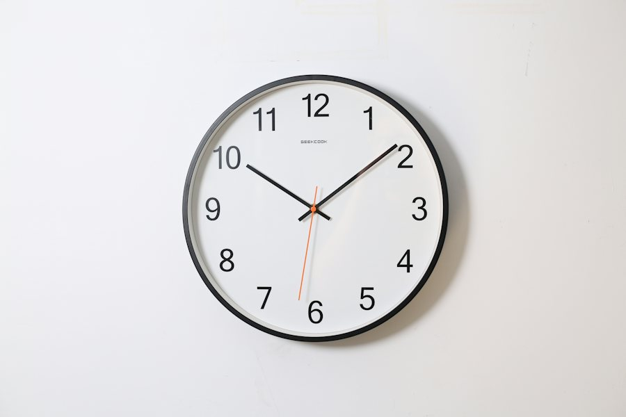

Ficha de sesión · S09 · solo docente
| § | Bloque | Min |
|---|---|---|
| 1 | Warm-up · Parcel notifications | 4 |
| 2 | Vocabulary · The Wrong Word Costs | 7 |
| 3 | Grammar · confirmation chunks · Reverse Engineering | 11 |
| 4 | Listening · Gapped Chunks | 8 |
| 5 | Speaking · Three Rounds 9 · role-play 8 · 12 preguntas 4 · setup 1 | 22 |
| 6 | Wrap-up · confirmation card + exit | 8 |
| Total | 60 |
Warm-up · What is unclear?
Teacher notes · §1 Warm-up
Pedagógica
- 4 notificaciones de paquetería (≤12 palabras) con un dato poco claro. El alumno oye, elige QUÉ falta confirmar y dice la pregunta antes de ver el modelo. Sin gramática explicada: tú modelas «Could you confirm…?» al responder.
- Repaso activo de S7: «The main point is…» al resumir la nota. Máx. 4 min; 30 s en silencio y luego habla sin leer.
- Grupo: cada quien elige una nota distinta. 1:1: discrepa del dato que eligió para provocar «because…».
Engagement
- Pregunta real: «¿Qué dato te ha hecho perder un paquete o una cita?»
- Cierra en voz alta: «Today I can check a detail.»
Crecimiento
- «In 56 minutes you will confirm a detail in three different ways.»
- Anota los datos más elegidos: se reciclan en las tarjetas de §3.
Vocabulary · 10 words for deliveries

Find the wrong word · fix it · see the cost
Found 0 / 41. Read the message. 2. Tap the word that sounds wrong. 3. Choose the right word. 4. Read the cost and say the corrected sentence.
Teacher notes · §2 Vocabulary
Pedagógica
- The Wrong Word Costs (IMPOSTOR): cuatro mensajes con UNA palabra equivocada cada uno (falsos amigos y preposiciones típicas: retire, until, realize, tracking name). El alumno detecta, corrige y lee el «costo» comunicativo de la palabra equivocada. En clase tú puedes plantar palabras propias y contar cuántas cazan.
- Primero el muro (≈2 min): toca, oye la palabra y el ejemplo, repite 2 veces. Pronunciación: courier /ˈkʊriər/, parcel /ˈpɑːrsl/, deadline /ˈdedlaɪn/, notification /ˌnoʊtɪfɪˈkeɪʃn/.
- Léxico del día: 10 elementos (tope B1 10–12) y ≥70% reaparece en producción (Role-play y Gapped Chunks). Cierre en voz alta: «We found __ wrong words.»
Engagement
- Pregunta: «¿Qué palabra en inglés te ha confundido en un paquete o en una cita?»
- Rotación: VOC-11 es nueva en este nivel (última VOC: S8 VOC-08).
Crecimiento
- Los costos se reciclan en el Reverse Engineering (§3).
- Anota las palabras que nadie detectó: reciclarlas en S10.
Grammar · four ways to confirm
Four chunks. One goal: be sure before you act.
1 · Ask to confirm
For one detail you need to be sure about.
2 · Repeat what I understood
Say it back in your words.
3 · Close the details
Before you hang up or act.
4 · Clarify a word
When a word or idea is not clear.
| Chunk | After it |
|---|---|
| Could you confirm | the thing (the code · the time · the address) |
| So … right? | a full simple sentence with what you understood |
| Just to confirm, | a full simple sentence |
| Do you mean | the word or idea you think it is |
¿Qué es? Cuatro frases para asegurarte de que entendiste bien: pedir confirmación, repetir lo que entendiste, cerrar los detalles y aclarar una palabra.
¿Cómo se usa? Could you confirm + el dato. So… right? y Just to confirm, llevan una oración completa. Do you mean + la palabra o idea.
¿Para qué hoy? Para evitar errores con códigos, horas, direcciones y plazos antes de actuar.
Cuidado: no uses «Confirm me…» ni «You mean…?» sin do: suena brusco o incorrecto.
Choose the correct form
You see the ANSWER. Find the question that produced it.
Solved 0 / 41. Read the answer. 2. Choose the question that produced it. 3. Say the question. 4. Say a NEW question with a different chunk.
Teacher notes · §3 Grammar
Pedagógica
- UN solo punto de lengua: cuatro chunks de confirmación. Explicación docente ≤5 min (el Recap está en pantalla). Práctica A mecánica (2 min) = ≤1/3; Reverse Engineering es meaningful: el alumno decide qué pregunta encaja con la respuesta.
- Reverse Engineering (OCULTAMIENTO): la respuesta está visible y la pregunta oculta; el alumno debe reconstruirla. Después dice una pregunta NUEVA con otro chunk. En 1:1 tú das la respuesta de viva voz y el alumno propone la pregunta.
- Límite de nivel: sin preguntas reportadas ni cambio de tiempo. Errores previstos: «Confirm me the code», «You mean the locker?» sin do, falta de right al final de «So… ?».
Engagement
- «Before you act, check one detail.»
- Cierra en voz alta: «We solved __ cards.»
Crecimiento
- Los 4 chunks sostienen la misión de §5 y el Role-play.
- Anota los 3 errores más repetidos: serán material de S10.
Listening · Gapped Chunks
Elena calls the courier about her parcel. Listen to the call. The gaps are only in the CHUNKS: fill them from the bank.
Final audio: MP3 recorded with ElevenLabs.
Fill the four gaps
Collected 0 / 4What did you understand?
Teacher notes · §4 Listening
Pedagógica
- Gapped Chunks (COLECCIÓN): llamada de 141 palabras (rango B1 120–200) entre Elena (Canadian English, nativa) y Rahul (Indian English, no nativo). Los huecos están SOLO en los chunks funcionales (4 huecos) y hay 2 distractores en el banco. Marca [PARA GRABAR]: sin MP3 suena la voz del navegador.
- Ciclo: (1) escuchan toda la llamada sin mirar; (2) rellenan los 4 huecos con el banco; (3) escuchan otra vez y comprueban; (4) Task 2 con la hoja de respuestas. Cada chunk correcto se «colecciona»: 4 de 4 = colección completa.
- Answer key: locker on Hidalgo Street · code 5813 (Elena heard 5812) · pick up by Friday · deadline Friday at noon · after noon the parcel returns to the warehouse. Huecos: Just to confirm · Could you confirm · right · Do you mean.
- Cumple: ≥3 elementos de léxico (parcel · locker · pickup code · deadline · tracking number) y la forma central ≥2 veces (usada 4 veces); ≥1 acento no nativo.
Engagement
- Pregunta: «¿Qué haces cuando no entiendes un número por teléfono?»
- Cierra en voz alta: «I collected __ chunks.»
Crecimiento
- Un hablante no nativo retrata la planta real (proveedores, mensajería).
- Anota qué chunk costó más oír.
Speaking · Three Rounds + the courier call

Answer the same question three times. Then confirm three details on the phone.
Rounds: plain → with a confirmation → passing a message. Call: Could you confirm…? · Just to confirm… · So…, right? · Do you mean…?
Group: pairs (A = customer, B = courier). Keep your facts private. Groups of 4: two pairs.
1:1: you are the customer, the teacher is the courier.
Same question · more demand each time
Confirm three details · correct one wrong detail
Moves 0 / 1012 questions · always 2 follow-ups

Teacher notes · §5 Speaking
Pedagógica
- Three Rounds, Same Question (ESCALADA) · escalation_note: en S2 las rondas subían en cantidad de detalle; ahora cada ronda exige MÁS lengua: R1 respuesta simple (30 s) · R2 añade una confirmación (45 s) · R3 pasa un mensaje a una tercera persona y pide confirmarlo (60 s, mediación). El punto es por producir lengua, no por rapidez.
- Después, el Role-play: cada jugador revela en privado sus datos; cliente y mensajero hablan por teléfono y deben usar los chunks del día. Cada jugador suma 5 movimientos (10 en total); éxito ≥7. El mensajero corrige un detalle equivocado del cliente (código 5812 vs. 5813).
- Mediación: el cliente debe poder pasar el resultado a un tercero («Anna says…»). Anota errores sin nombres.
- Preguntas (4 min): elige 3–4 de las 12; todas con 2 follow-ups; nunca respuestas de una palabra. Setup ≤1 min.
Engagement
- Anuncia el resultado: «We did three rounds and found __ of 10 moves. Mission complete!»
- Pide que cada quien diga cuál ronda costó más y por qué.
Crecimiento
- S10 usa la misma lógica de tres partes en una junta con metas secretas.
- Registra: ronda más difícil, chunks más usados y detalles corregidos.
Wrap-up · Better the second time
Write three — then say them
Said 0✓ Success
↑ Upgrade
✎ Repair
↻ Next use
Confirm one real detail by message this week.
60 seconds · 5 questions
Today I can…

You can confirm a detail before you act.
Homework: send ONE real confirmation by message this week: “Just to confirm, …” (a time, an address or a number). Next: Session 10 (Do we need to…?).
Teacher notes · §6 Wrap-up
Pedagógica
- Máx. 2 aciertos y 3 correcciones de alto valor (usa los errores anotados). La tarjeta de confirmaciones cierra con tres oraciones propias dichas en voz alta.
- Tarea: una confirmación real por mensaje. Se revisa al inicio de S10.
Engagement
- Declaración final: «Today I can check a detail before I act.»
- Compara con §1: «Minute 1: you chose what was unclear. Minute 58: you confirmed it three ways.»
Crecimiento
- Registra: palabras equivocadas, chunks reunidos, rondas y movimientos del role-play.
- «Next session: Do we need to…? — a coworking onboarding.»